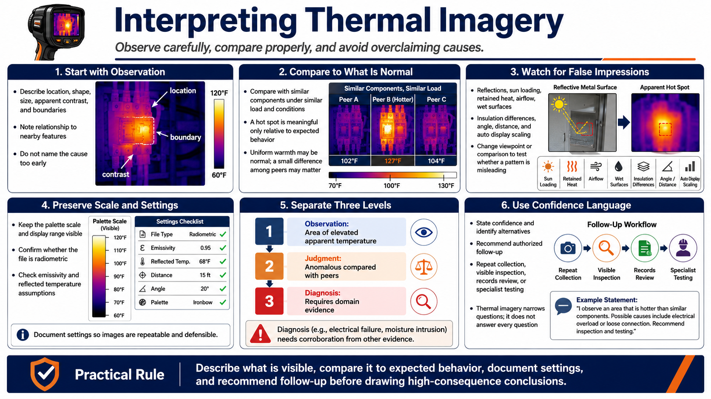

Interpreting Thermal Imagery
Connecting to LMS... Progress: in progress

Narration
Interpretation begins with observation. Describe the pattern's location, shape, size, apparent contrast, boundary, and relationship to nearby features. Avoid naming a cause before the visible evidence and operating context have been considered.
Compare the feature with an appropriate background or similar component under similar load and conditions. A hot spot is meaningful only relative to expected behavior. Uniformly warm equipment may be normal, while a small difference among matching components may deserve review.
False impressions can come from reflections, sun loading, retained heat, airflow, wet surfaces, insulation differences, angle, distance, or automatic display scaling. Moving the viewpoint or changing the comparison can help reveal a reflection without proving the final cause.
Preserve the scale and settings. Palette changes can make a small difference look dramatic. Confirm whether the file contains radiometric data and whether measurement assumptions such as emissivity and reflected temperature are appropriate.
Separate observation, judgment, and diagnosis. An observation may be an area of elevated apparent temperature. A judgment may be that it is anomalous compared with peers. A diagnosis of electrical failure or moisture intrusion requires domain evidence.
Use confidence language and identify alternatives. Recommend authorized follow-up such as repeat collection, visible inspection, records review, or specialist testing. Thermal imagery is strongest when it narrows questions rather than pretending to answer every one.